Весна пришла на Мамай
( 17 - 18 марта 2007 )
Слегка морозное утро, набитая тропа, осадков за неделю практически ноль.
Немаленькая компания из давно известных мамайцев (Лёха, Лёха, Юля и Макс)
и новичков в этом хорошем деле (Уля, Михаил, Надежда, Алексей). Легкий обед в
зимовье и вся компания двигает в сторону яркого весеннего солнца. Тропить
пришлось до Лесного, потому как кулуары с Трех Берез уже хорошо закатаны. |
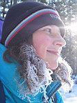 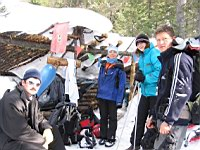 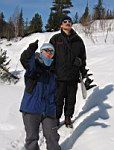 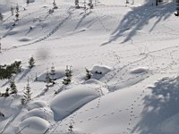
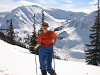 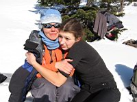 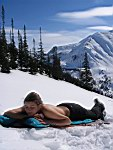
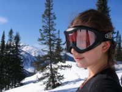 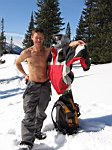 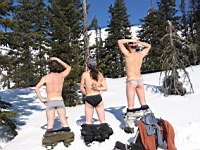
Где-то в середине подъема все были просто никакие от жары, пришлось устроить горный пляж
и заряжаться ультрафиолетом. Весна! Припекает как надо! В следующий раз не забыть бы
коврики и забатонить подольше :) Но сегодня по плану - хорошо покататься, и потому через
некоторое время группа была на вершине Лесного, где произошло традиционное уничтожение
продовольственного запаса. Далее туристы-первопроходцы любовались видами горной
страны Хамар-Дабан, а снегодоскеры встегивались, молились и уходили вниз.
Слава Богу, не навсегда :)
Юля многократно обкатала верхушку пупыря, Макс и Алексей уехали в Веселый кулуар,
а два Лёхи - в следующий кулуар, который можно смело назвать Карвинговым. Потому
как ширина и уклон позволяют "вваливать на все деньги", да так, что не хватает жесткости
- загибается широкий нос фрирайдной доски. Выкатили до речки, одели снеготапочки
и пошли к тропе, встретив Макса и Алексея. Второй подъем дался намного труднее -
сказалась почти бессонная ночь, проведенная за просмотром фоток с Кавказа, фильма
про придурков и сказки перед сном. |
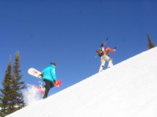 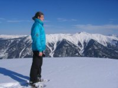 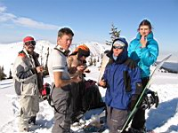 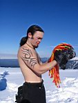
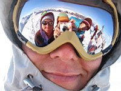 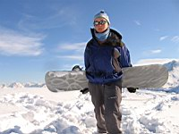 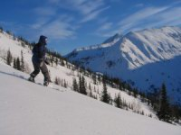 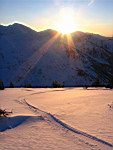
Возвращение в лагерь немного закосячили - было уже поздно, темнело, а все
возвращались (спускались) практически по одному. Кое-кто попав в снежную сыпуху
схватил реального экстрима! Так что, блин, за ум надо браться и кататься сплоченной командой, а то долго не покатаемся, вот...
Ну в итоге все нормальные вернулись, уставшие и довольные отличным солнечным
деньком и катухой! Время проводить аклиматизацию, благо Михаил раскочегарил
печку, а Макс припас 5-ти звездочное лекарство с Кавказа :)
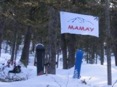 Аклиматизация
прошла успешно,
мужичьё схватив лопаты убежали
накидывать кучу снега, потом еще
немного аклиматизировались, убежали
копать пещеру в куче снега. Потом еще
немного аклиматизировались, схватили
спальники и вырубились в трехместной
белой берлоге.
|
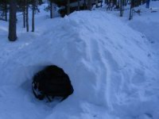 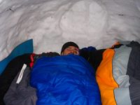 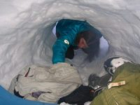
День второй, солнечно как в Африке, мужичьё пошло на Лесной, раздеваясь и
загорая всю дорогу. Катанули на этот раз стандартным маршрутом, правда
немного прогулявшись по гребню на юг. |
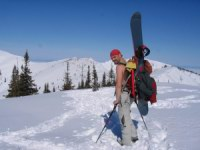 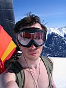 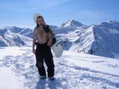
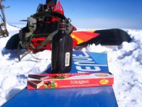 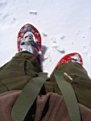 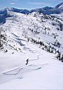
Михаил и Надежда (коренная иркутянка из Питера) время
даром не теряли
и успели
посетить вершину Центральный Мамай.
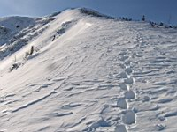 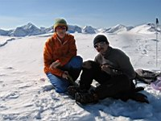 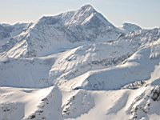
Март 2007
Текст: Алексей Белокрылов
Фото: Надежда из Питера, Алексей из Слюдянии
|